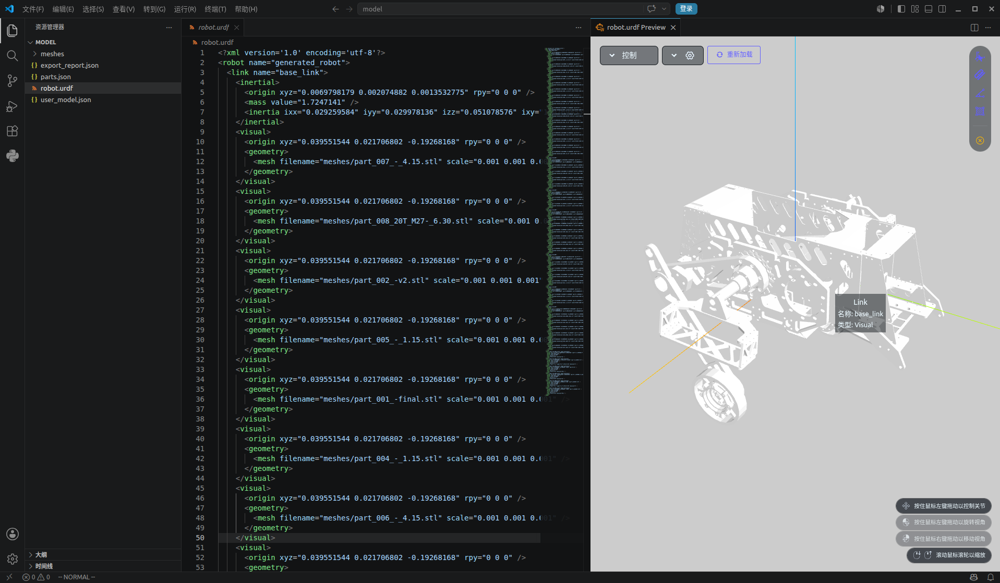
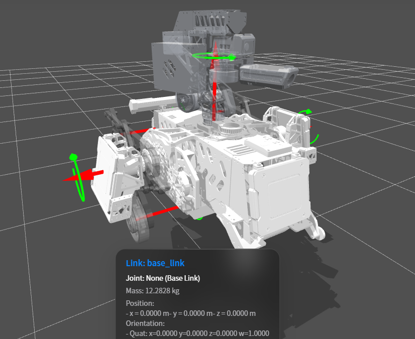

Robot Reinforcement Learning
OMMTEC / Research direction 02
From robot geometry to learning in simulation.
Robot reinforcement learning is one of our research directions. These snapshots document the robot modeling and inspection work that helps prepare a platform for simulation-based learning.
01 / Robot description
Building the URDF model
The first image shows a robot description being edited alongside a three-dimensional preview. The visible URDF includes a base link, mass and inertia properties, mesh references, and geometric offsets.
This stage connects the mechanical model with its software description. Checking how the meshes and coordinate frames line up is part of preparing the robot for subsequent simulation work.

02 / Model inspection
Inspecting the assembled robot
The second view shows the assembled robot on a reference grid, with coordinate markers and information for the selected base link. It provides a closer look at the relative placement of the chassis, wheels, and upper structure.
Visual inspection helps identify alignment and configuration issues before training. A rendered model alone does not establish that its dynamics are validated or that a control policy has been trained.

03 / Work in progress
Video from our robot learning work
A video shared from our ongoing work in this research direction, presented alongside the model preparation and inspection images above. Details of the experimental setup and training results will be added as the project documentation develops.
Toward reinforcement learning
A prepared robot model is a starting point for defining a simulation environment, observations, actions, and rewards. Training and evaluation then test how a learned policy behaves. We will add our specific training setup and results as those materials become available.
Contact the team